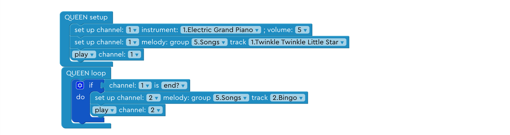
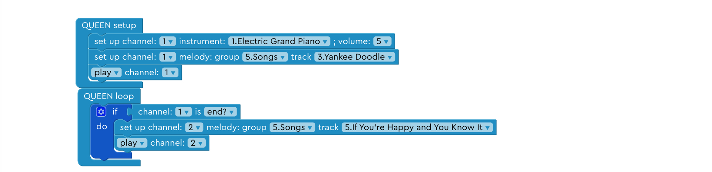
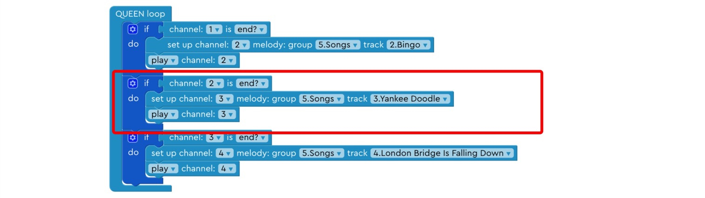
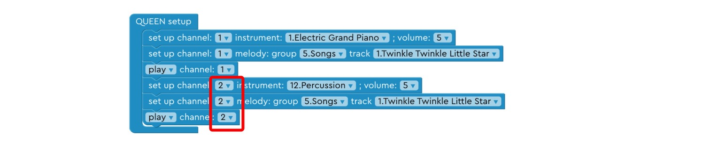
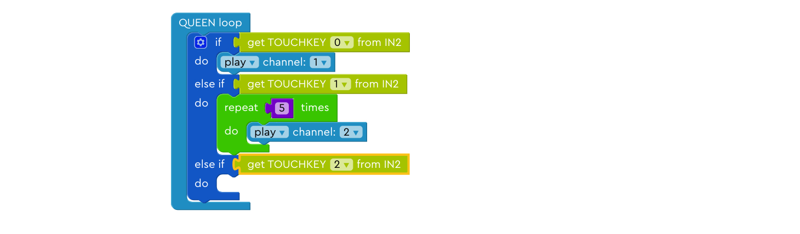
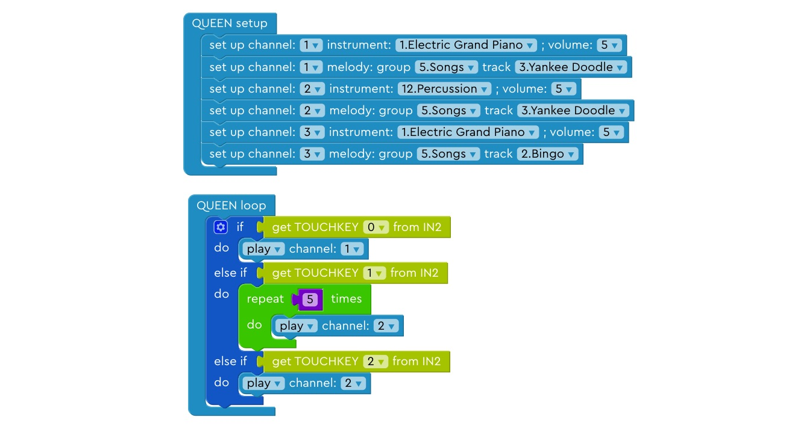
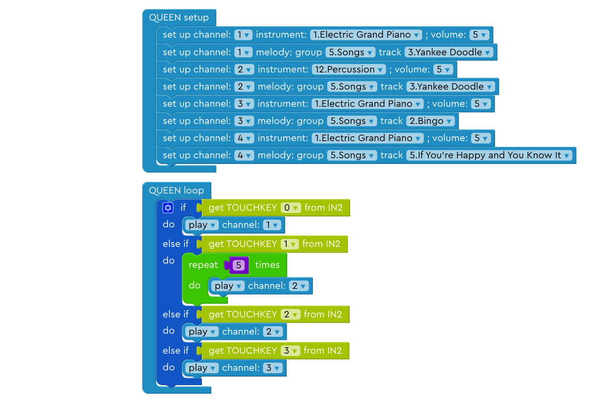

Lesson¶
Lesson 1¶
Step 1: Basic Setup¶
Left for input, right for output.

Step 3: Play A Song Once¶
Drag the block into the correct position to play the song once.
Step 4: QUEEN Loop¶
QUEEN Loop runs over and over again after the program starts.
Step 5: Play A Song Over and Over Again¶
Drag the block into the correct position to play the song over and over again until you stop the program.
Step 7: Play Two Songs¶
Arrange the blocks in the correct order to play song1 first and play song2 second.

Step 8: Play Song A and Song B¶
Find the blocks you need in the left, then choose Song A and Song B. Arrange the blocks in the correct order to play song A first and play song B second.

Step 10: Delete the Middle Block¶
Delete the last block so that we only play the first two songs.

Step 13: Use two channels¶
Use two channels to play a song with two different instruments at the same time.

Step 14: Play song A and beat B together.¶
Change the second instrument to a percussion instrument.
Lesson 2¶
Step 1: Assemble input module¶
Connect the TOUCH block.
Step 3: Change input key¶
Use another key to play the music!
Step 4: Add another else branch¶
Add an “else-if” branch under the current if-else statement.
Step 5: Set up the second input key 1¶
Add “get TOUCHKEY” block into the else-if branch.
Step 6: Set up the second input key 2¶
Change “get TOUCHKEY” to get input from the second touch key.
Step 7: Add a channel¶
Add a second channel for the newly added touch key.
Step 8: Set up the second input key to beat¶
Play beat in the second channel.
Step 9: Play the beat 5 time 1¶
Drag “repeat n times” block to the else-if branch.
Step 10: Play the beat 5 time 2¶
Change the number in the “repeat” block to 5 and add “play channel 2” into the repeat block.
Step 11: Set up the third key 1¶
Try set up a third key! You need to create another else-if branch, get the third touch key input.

Step 12: Set up the third key 2¶
Set up the third channel, play song B with instrument B on this channel.

Step 13: Set up the fourth key¶
Try set up a fourth key on your own! You need to create another else-if branch, get the fourth touch key input. Set up the fourth channel, play song C with instrument C on this channel.
